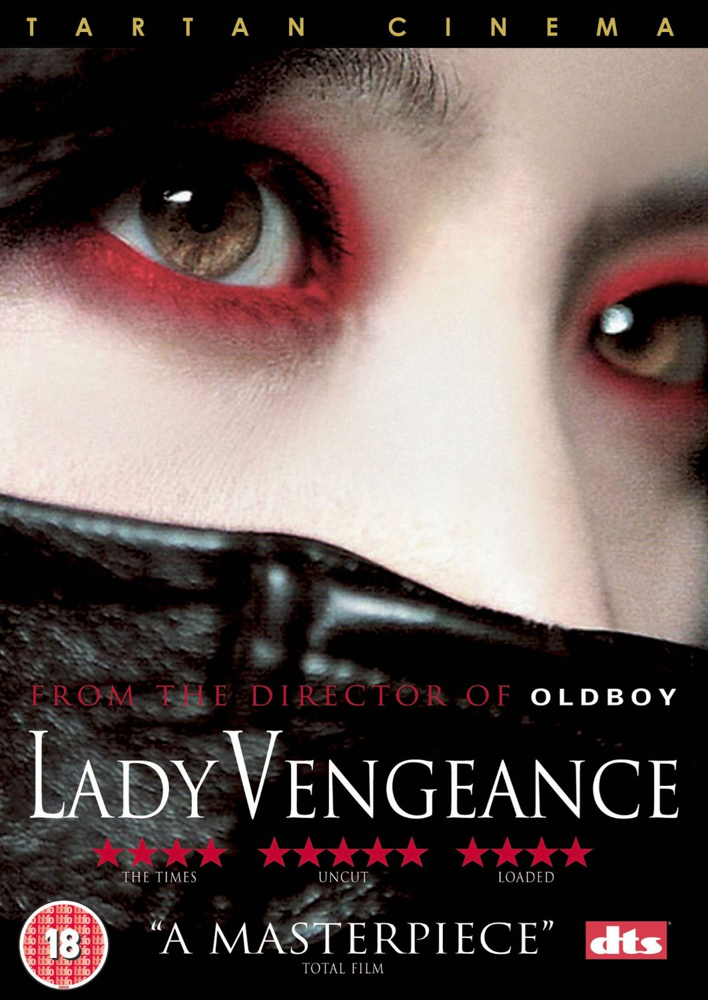
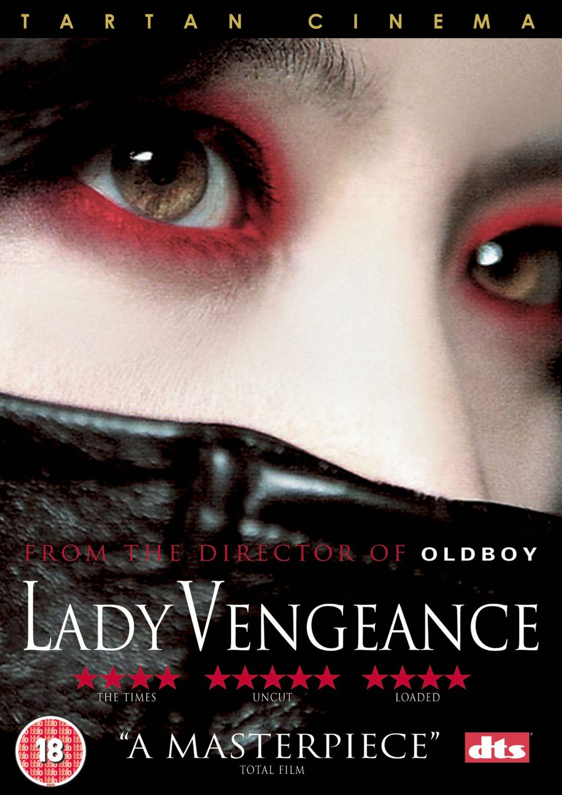
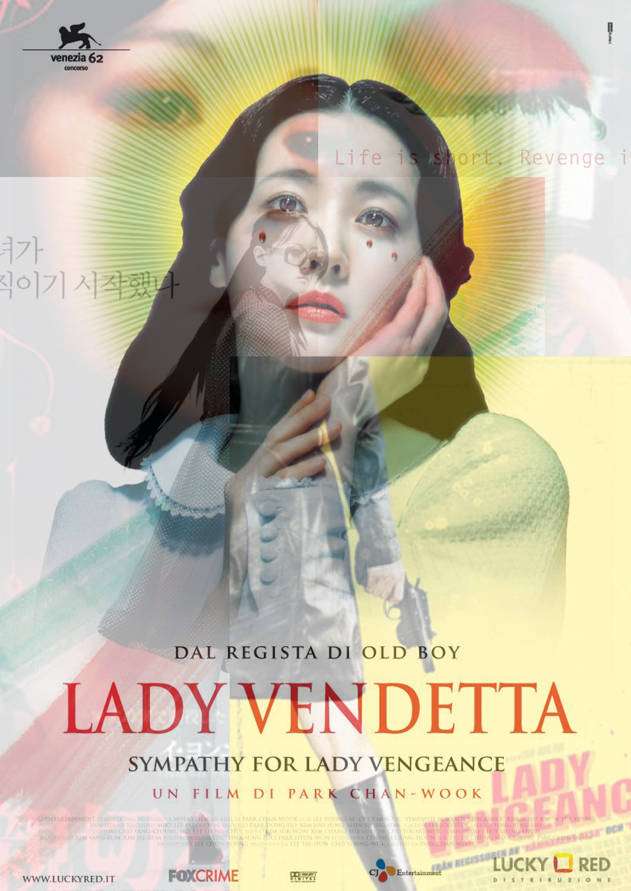
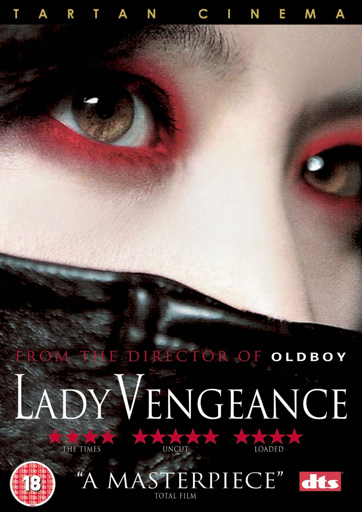

Sympathy For Lady Vengeance
Park Chan-wook
A Christian musical procession waits with a symbolic block of tofu outside a prison for the release of Lee Geum-ja (Lee Young-ae), a recently reformed female prisoner. Convicted of kidnapping and murdering a 5-year-old schoolboy, Won-mo, 13 years earlier, Geum-ja became a national sensation because of her young age, angelic appearance, and eager confession to the crime. However, she became an inspirational model for prisoner reform during her incarceration, and her apparent spiritual transformation in prison earned her an early release on her sentence. Free, Geum-ja is now intent on revenge.
All six posters include the image of the lady vengeance which is unusual. The Korean version of the poster has an image of the lady walking away while looking back at something. The two colors used is iconic color of the film, which is the color of her eyeshadows. The text on the upper left corner reads, "She started moving." The U.S. version of the poster has a close up image of her eyes with red eye shadows. However, the black fabric that covers bottom half of the poster makes her look like a ninja.
The Spanish version of the poster has two images of her eyes with red eyeshadow. With the text, "Life is short. Revenge is eternal," the poster is implying upcoming revenge in the movie. The Italian version of the poster has an image of the actor with three red teardrops sliding down her face. There is a green halo behind her that might be idolizing her. The poster reminds me of religious stories or paintings.
The Swedish version of the poster has yellow background with red text and lady vengeance's back half of the body with gun in her hands. There is a blood mark on the bottom right corner that leads the audience to expect some murder in the movie. This poster reminds me of Kill Bill because of her posture and the color scheme used. The Japanese version of the poster has nostalgic mood. Lady vengeance is holding a mirror with her wounded hands. She is wearing the red eyeshadow as usual. This poster might erroneously give erotic mood, rather than hinting the action and revenge that occurs in the movie. All six of the posters are unique and designed well. Overall, Korean, Italian, and Spanish versions of the poster portrays the mood of the movie the best.